Растровая 2D и 3D графика
HTML5 элемент canvas позволяет создавать растровые 2D изображения. Дополнительные библиотеки (например three.js)
позволяют работать с 3D моделями.
Векторная 2D графика
Возможно вставлять и управлять SVG файлами.
SVG — Scalable Vector Graphics
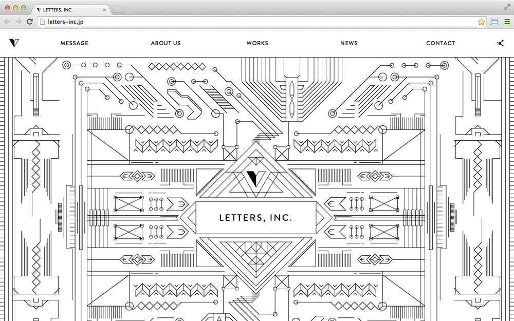Аудио и видео
Управляемое проигрывание аудио и видео позволяет создавать удивительные презентации продуктов.
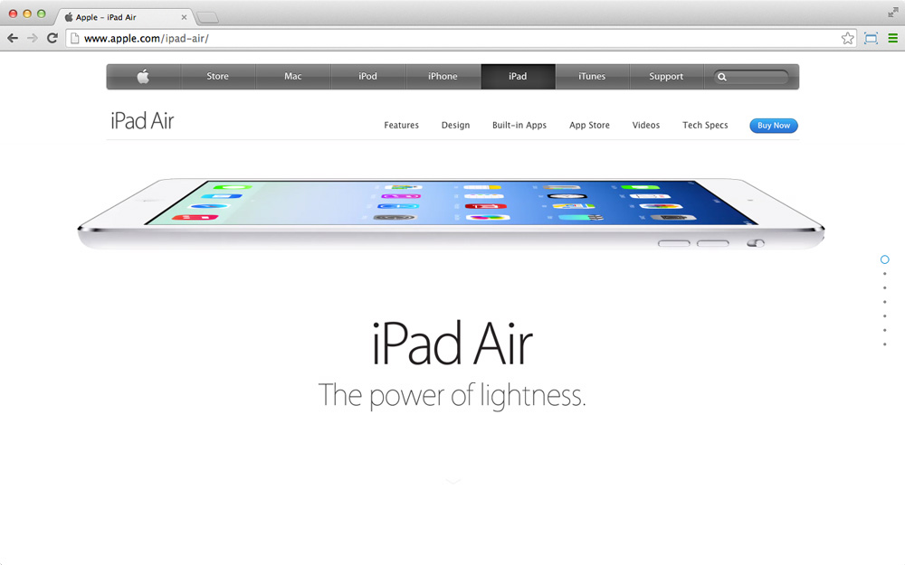 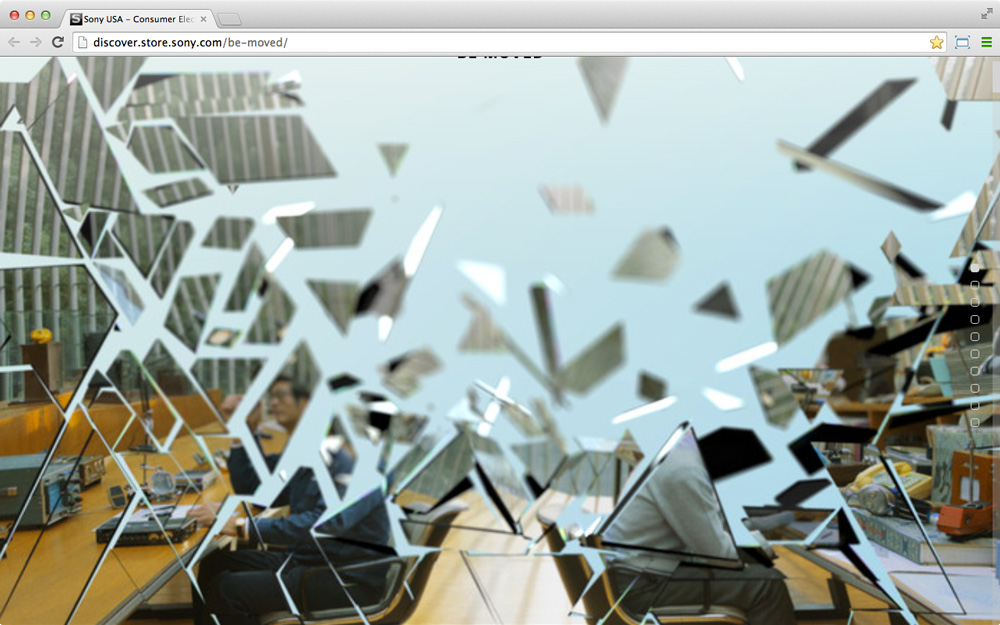Параллакс
Изменение видимого положения объекта относительно удалённого фона в зависимости от положения наблюдателя. Используется во множестве современных сайтов для создания эффекта глубины картинки.
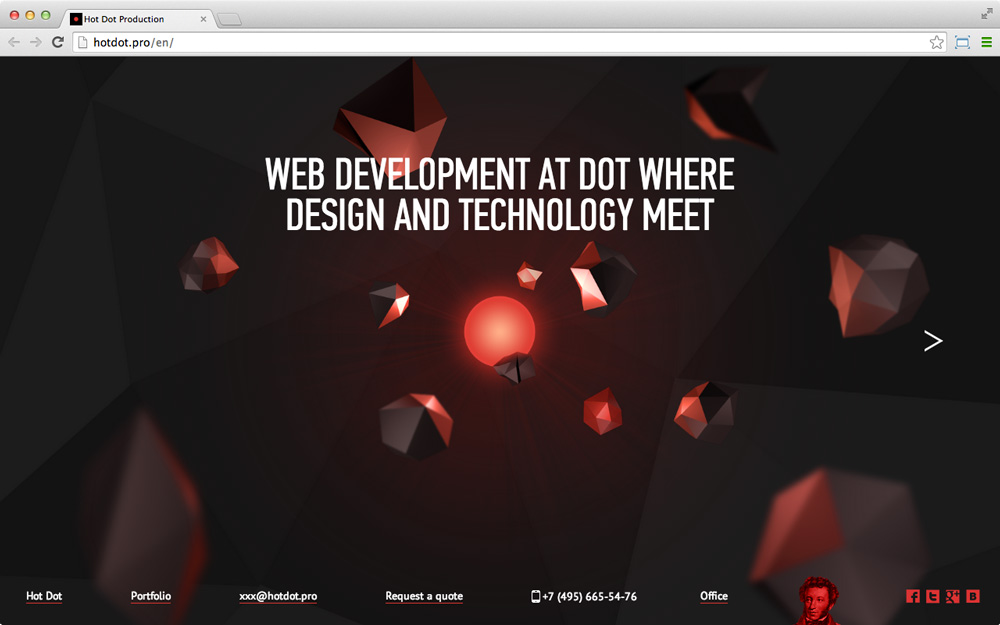One Page Scroll
Повсеместно используется в продуктовом вебе.
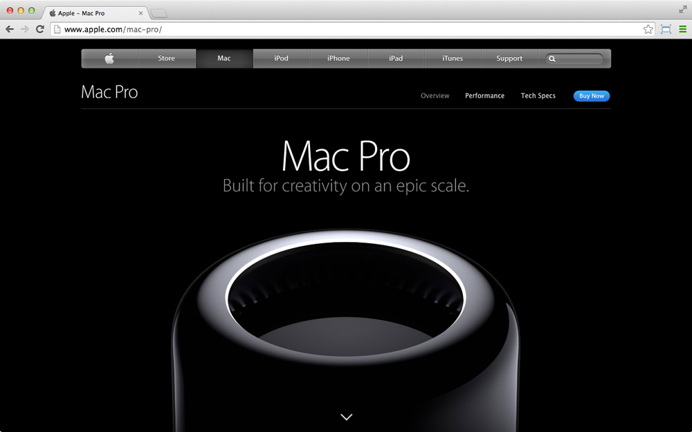 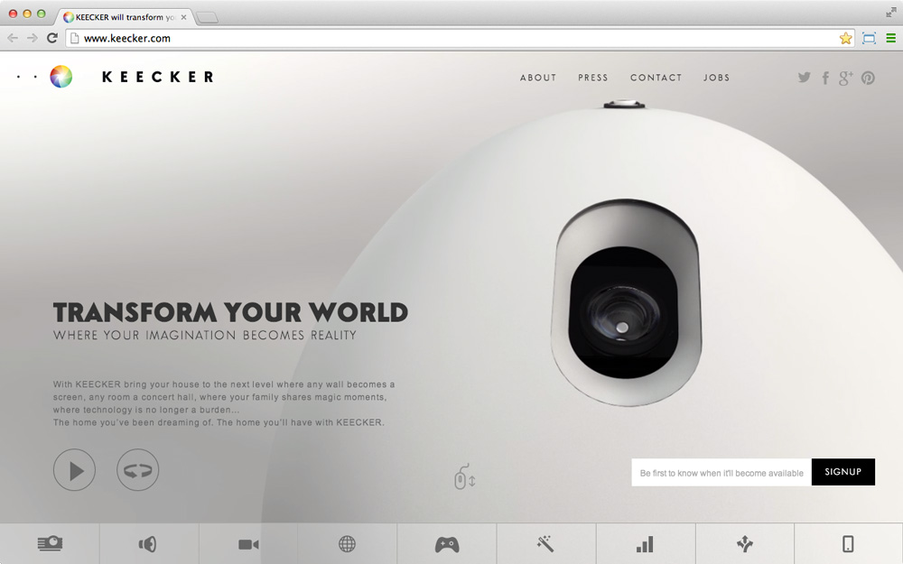Интуитивный интерфейс
Конкурентная среда создаёт условия для борьбы за внимание пользователя. Это обязывает сайты быть простыми,
понятными и удобными.
Web Fonts
Возможность подгружать шрифты.
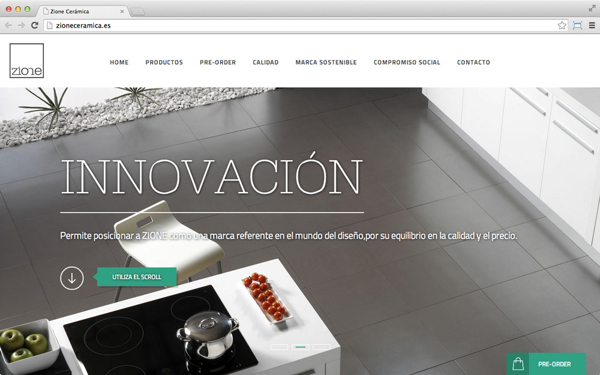Инфографика
Информация может быть наглядной.
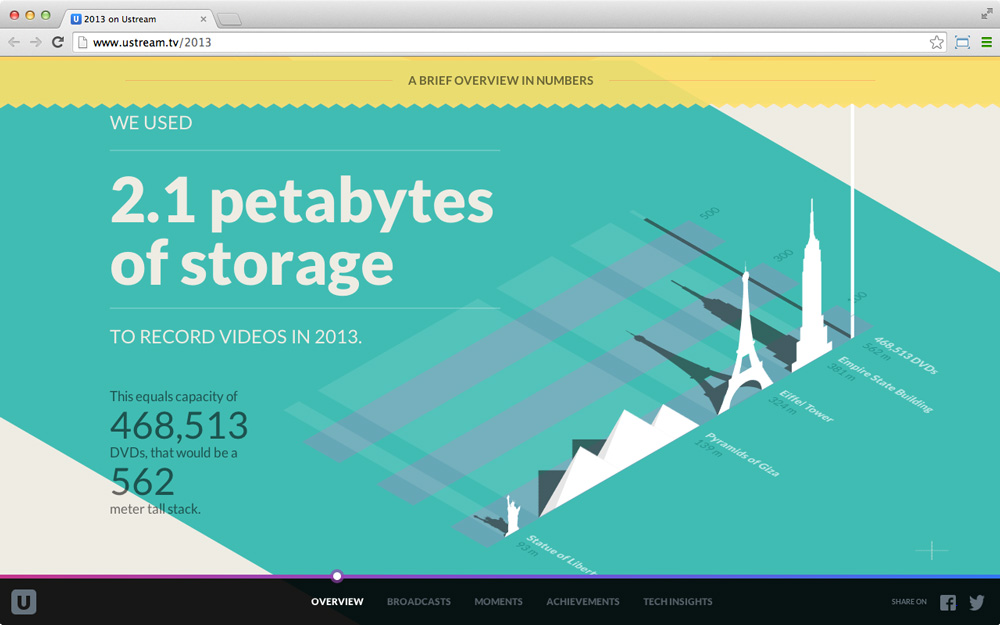Асинхронная работа с данными
Возможность обновлять отдельные участки сайта, подгружать необходимые файлы и делать многое другое без перезагрузки страницы.
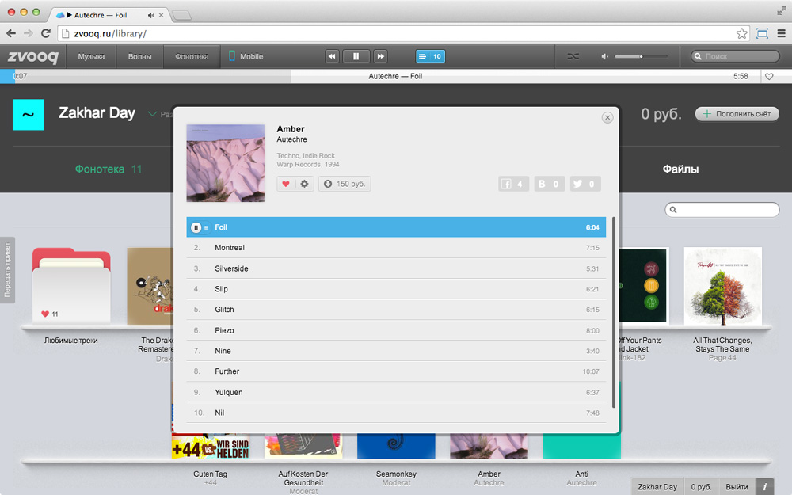 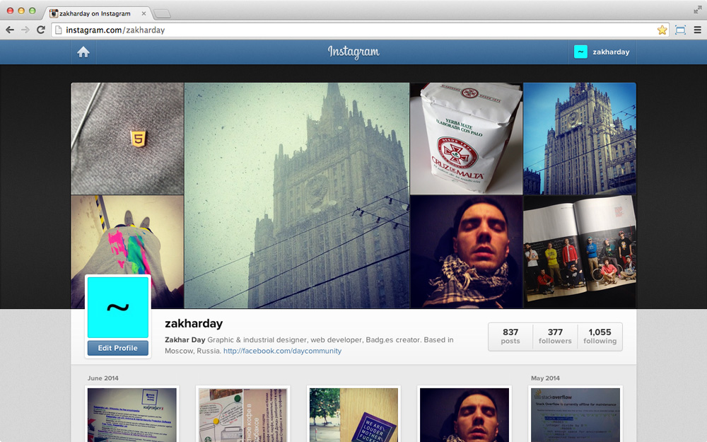Web Socket
Протокол полнодуплексной связи, предназначенный для обмена сообщениями между браузером и сервером в режиме реального времени.
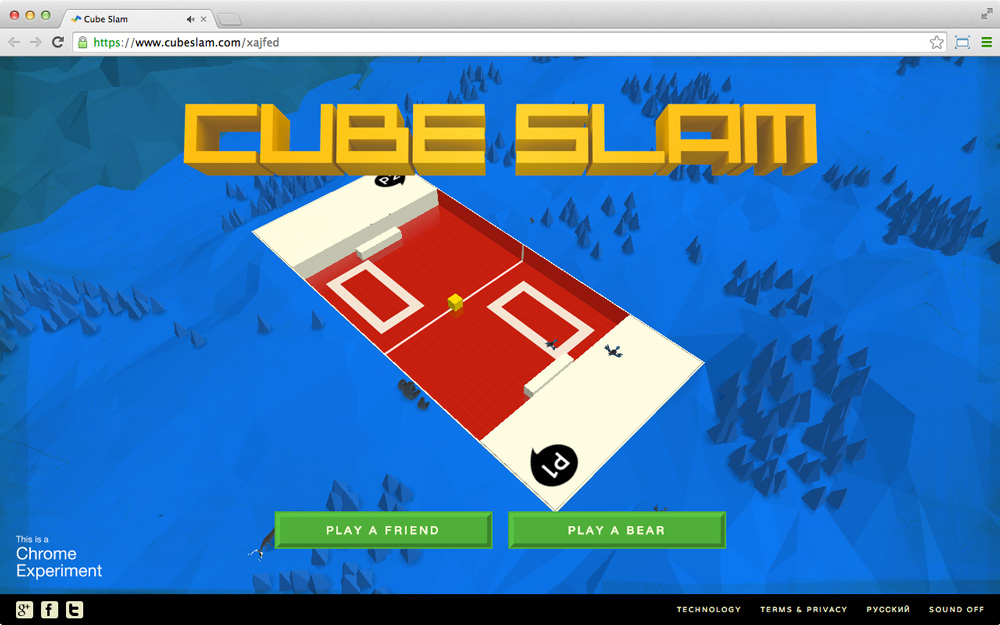Веб-приложения
Многие сайты уже совсем не сайты.
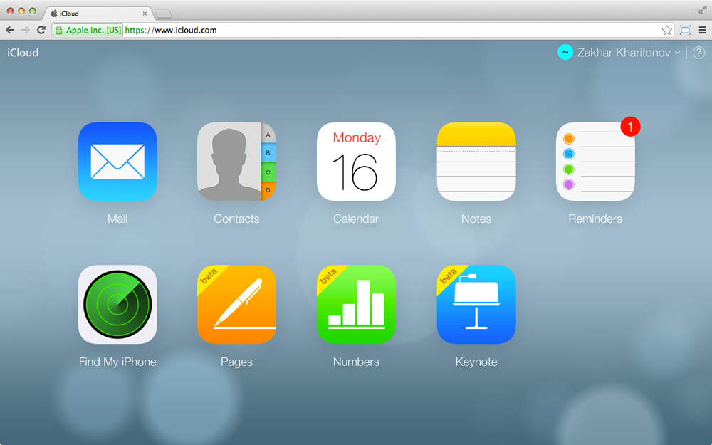 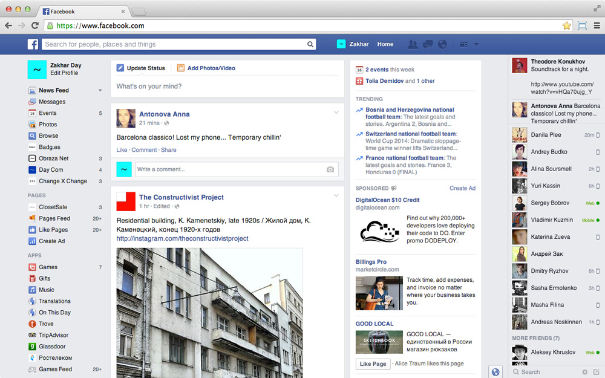Эффекты
Скругление углов, тени, градиенты, прозрачность, геометрические трансформации, управление временем и многое другое.

Адаптивный дизайн
Возможность определять размер окна браузера и
применять необходимые правила отображения.